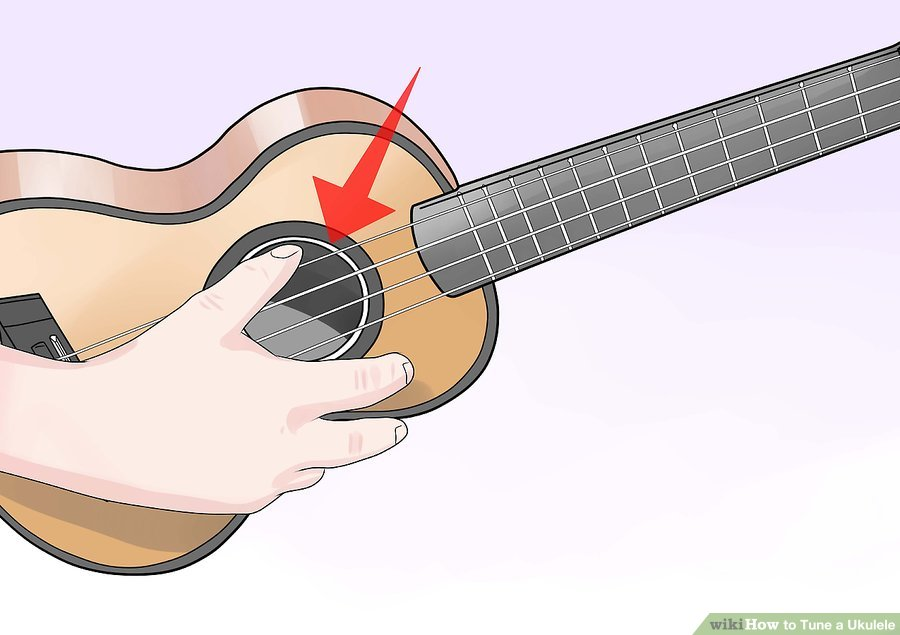

Step 1: Learn the layout
First step is to learn the layout of the ukelele. Each tuner controls a different string on the ukelele. Tightening the strings makes the pitch higher and loosening them makes it lower.

Even though the ukulele has only 4 strings, compared to the 6 or 12 on a guitar, it can still be difficult to tune if you're new to stringed instruments. This how to is a basic how-to on how to tune a ukelele for beginners.
It is possible to tune a ukelele by ear but it helps to have a tuner or reference note.
First step is to learn the layout of the ukelele. Each tuner controls a different string on the ukelele. Tightening the strings makes the pitch higher and loosening them makes it lower.
The next step is to find your pitches. Each string is tuned to a different note. The first string shoud be tuned to G then C then E then A. Below is a video of what each strings note should sound like
For this step you will tune each string one at a time. Take the first string and start tuning it to G. and strum to test the note. When the first string is on G, then move onto the second string and tune that to C and then The next to E and then to A. After each string is tuned to it's determined note you are ready to play.
At this step it is helpful to use an electric tuner or a tuning app. It is possible to tune by ear but a reference note is needed. The video above would be a good reference if necessary.